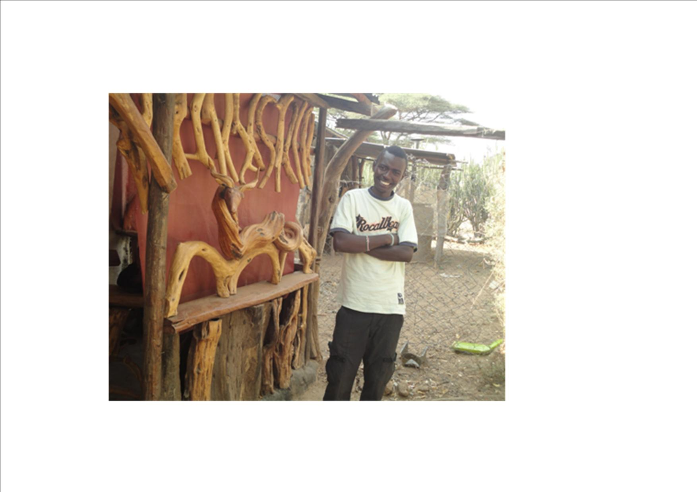

CAMP AND INTERNS
CITAM KISUMU

CAMP (CITAM Apprenticeship Ministry Program)
George Ndung’u Njuguna
George is an alumnus of Kenyatta University; studied Bachelor of Science (Biochemistry & Chemistry). He loves expositing and teaching the Word of God. Mentorship amongst the youth & children is something he is in pursuit for even at here CITAM Kisumu. He is passionate about Missions and Discipleship. He previously served as a missionary for a year in the frontiers among the Ariaal-Rendile and Samburu unreached communities in Northern Kenya; Marsabit- Olturot. He is engaged to Catherine Mumbi. He is to join Africa International University in September 2014 to train further in Ministry.
